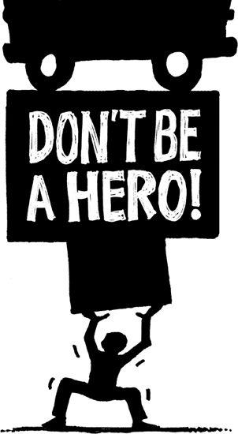

{% include JB/setup %}
{% raw %}
<div>

<h2 id="filepos126884" class="calibre19"><span class="calibre2"><a class="calibre13"></a><strong class="calibre14">Quick wins</strong></span></h2><div class="calibre4"></div>
<p class="calibre7">Momentum fuels motivation. It keeps you going. It drives you. Without it, you can't go anywhere. If you aren't motivated by what you're working on, it won't be very good.</p>
<p class="calibre17">The way you build momentum is by getting something done and then moving on to the next thing. No one likes to be stuck on an endless project with no finish line in sight. Being in the trenches for nine months and not having anything to show for it is a real buzzkill. Eventually it just burns you out. To keep your momentum and motivation up, get in the habit of accomplishing small victories along the way. Even a tiny improvement can give you a good jolt of momentum.</p>
<p class="calibre17">The longer something takes, the less likely it is that you're going to finish it.</p>
<p class="calibre17">Excitement comes from doing something and then letting customers have at it. Planning a menu for a year is boring. Getting the new menu out, serving the food, and getting feedback is exciting. So don't wait too long--you'll smother your sparks if you do.</p>
<p class="calibre17">If you absolutely have to work on long-term projects, try to dedicate one day a week (or every two weeks) to small victories that generate enthusiasm. Small victories let you celebrate and release good news. And you <a class="calibre16"></a>want a steady stream of good news. When there's something new to announce every two weeks, you energize your team and give your customers something to be excited about.</p>
<p class="calibre17">So ask yourself, "What can we do in two weeks?" And then do it. Get it out there and let people use it, taste it, play it, or whatever. The quicker it's in the hands of customers, the better off you'll be.</p>
<p class="calibre3"><a class="calibre16"></a></p><div class="calibre4"></div>
</div>

{% endraw %}

